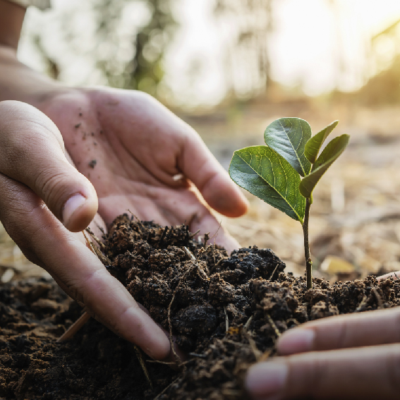
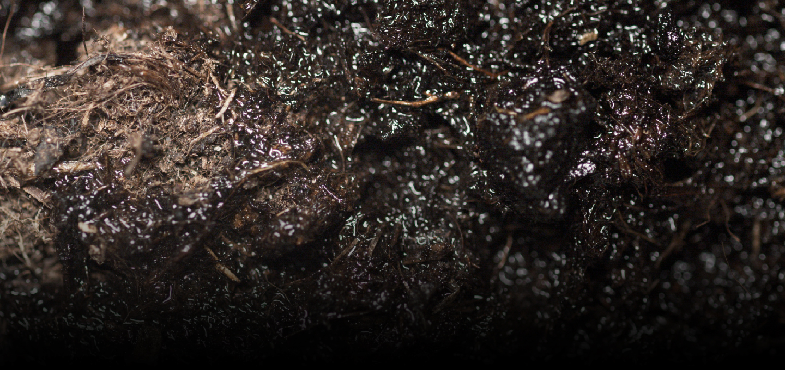

“Innovation begins when we learn the language of plants.”
For over 20 years, we have conducted research on plant physiology data and advanced materials to shape the future of agriculture. By combining nanomaterials with biomaterials, our innovative technology reduces fertilizer and pesticide use by more than 50% while maximizing both crop yield and quality. Agriculture is fundamentally built on four key elements: soil, compost (organic matter), fertilizer, and crop protection products.
-
01 Our mission is to help every farmer grow crops successfully.
We integrate advanced technologies such as nanomaterials and big data into agriculture. Guided by a culture of innovation and value creation, we continue to grow as a forward-looking agricultural technology company.
-

02 We manage every stage of the farming process, making agriculture simpler, more convenient, and more efficient.Development of Nano-Bio Advanced Materials Agricultural Consulting and Smart Farm Development Agricultural Supply Commerce Operator Premium Fruit Commerce Operator
-

01 NanoGelAdvanced Moisture Retention & Water-Holding–Based Soil Restoration Technology
-
02 BioGro
Complex Microbial Fertilizer for Climate Change Adaptation
-
03 NanoGro
Nano Metal & Mineral-Based Materials for Cost-Effective Innovation